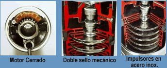
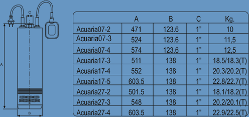

| Descripción | |||||
Bombas sumergibles totalmente silenciosas. Ademe mínimo 6". Motor y bomba integrados en un solo cuerpo. El enfriamiento del motor es por medio del agua bombeada. Succión en la parte inferior de la bomba. |
|||||
|
 |
|
|||||||
| Datos Técnicos |
|
||||||
| - Capacidad mínima de flujo: 8 lpm. - Capacidad de flujo: 8 - 410 lpm. - Motor: Rebobinable, con aceite dielectrico en su interior. - Amplitud de temperatura: 35 - 40 °C - Diámetro de succión mínima: 6 Pulg. - Rango de trabajo: 2 - 82 mca. |
 |
||||||

| Materiales de Contrucción | Datos del Motor | |
| - Envolvente exterior, camisa motor y rodetes en acero inox. AISI 304. - Eje motor en acero inoxidable AISI 420. - Difusores en policarbonato con fibra de vidrio. - Filtro en acero inoxidable. - Soporte motor, pie bomba y cuerpo impulsión en acero gris de fundición. |
|
- Asincrónico, dos polos. - Protección IP 68. - Aislamiento clase F. - Servicio continuo. - Acuaria 10M, con protección térmica incorporada. - Bobinado impregnado con barniz epoxi. |
